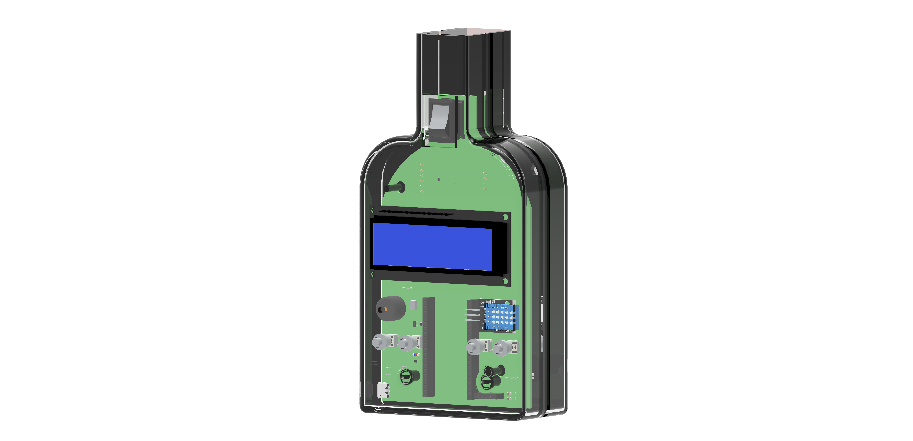

Datalogger

dispositivo electrónico que registra datos de diferentes tipos a lo largo del tiempo o en relación con la ubicación. Equipado con varios sensores, puede medir y almacenar información como temperatura, humedad, presión, niveles de luz y otras variables ambientales. Los dataloggers son herramientas cruciales en muchos campos, desde la investigación científica hasta la ingeniería y la industria.
Nosotros
Somos estudiantes de la Escuela Técnica N° 28 "República Francesa", ubicada en la calle Cuba 2410, en la intersección con la calle Blanco Encalada, en el barrio de Belgrano. Estamos en la etapa final de nuestro recorrido académico y nos enorgullece presentar nuestro proyecto final, que se centra en las mediciones obtenidas a través de un datalogger.
Nuestro objetivo con este proyecto es aplicar los conocimientos adquiridos durante nuestra formación técnica, demostrando nuestras habilidades en la recopilación, análisis y presentación de datos. A través del uso del datalogger, hemos podido capturar y analizar información precisa que esperamos resulte de gran interés y utilidad.
Estamos entusiasmados por compartir los resultados de nuestro trabajo y confiamos en que reflejará no solo nuestra dedicación y esfuerzo, sino también la calidad educativa que hemos recibido en nuestra querida escuela. ¡Gracias por acompañarnos en este importante paso hacia nuestro futuro profesional!.